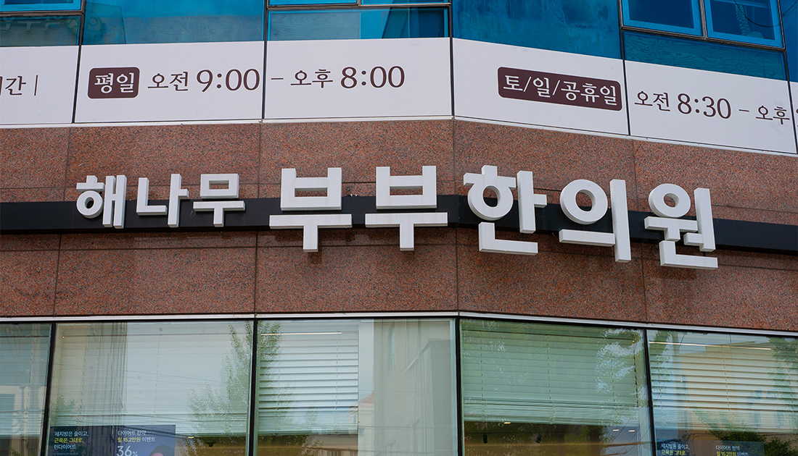

척추 질환
- 디스크, 협착증 등 척추 질환을 침, 약침, 추나, 한약 등을 병행한 통합치료로 접근합니다.
- 통증만 보지 않고 척추 정렬과 주변 근육·인대를 함께 살펴 빠른 회복을 돕습니다.
평일 진료 (매일 야간진료)
09:00 - 20:00 점심시간 12:20 - 14:00토·일·공휴일 진료 (365일 진료)
08:30 - 14:00 점심시간 없이 진료Clinic Record
2013년 05월 13일부터 2026년 06월 03일까지 640,164명의 환자분이 부부한의원에 다녀가셨습니다.
Clinic Approach
부부한의원은 현재의 증상과 생활 습관, 체질적 경향을 함께 살펴 상황에 맞는 최선의 치료 계획을 세웁니다. 충분한 설명과 세심한 진료를 바탕으로 환자분이 이해하고 신뢰할 수 있는 치료 방향을 차분히 함께 결정해 나갑니다.
Our Standard
부부한의원은 전통 한의학의 지식과 경험을 바탕으로 현대적인 검사·치료 장비를 진료에 적극 활용합니다. 초음파를 이용하여 병변 부위를 보다 면밀하게 살피고, 더욱 정밀한 치료가 이루어질 수 있도록 노력합니다.
또한 말초혈액검사, 맥파검사, 체성분검사 등을 통해 환자분의 몸 상태를 다양한 관점에서 확인하고, 이를 바탕으로 현재 상태에 적합한 치료 계획을 세우고, 한약 처방의 방향 또한 신중하게 결정합니다.

LOCATION
| 정류장 이름 | 구분 | 버스번호 | 기타 |
|---|---|---|---|
| 청호시장 입구 | 간선 | 3, 3-1 | 하차 후 도보 1분 |
| 청호시장 | 지선 | 10 | 하차 후 도보 5분 |
| 호반리젠시빌 | 간선 | 1 | 하차 후 도보 3분 |
| 지선 | 20, 20-1 | ||
| 순환 | 66, 66-1, 77, 77-1 | ||
| 낭만 | 11, 11-1 | ||
| 시계외 | 108, 200, 210, 800, 900, 900A | ||
| 무안군버스 | 100, 100A |
Reservation
| 구분 | 예약 가능 시간 |
|---|---|
| 평일 오전 | 9:00 / 10:00 / 11:00 |
| 평일 오후 | 14:00 / 15:00 / 16:00 / 17:00 |
| 토·일·공휴일 | 8:30 / 9:30 / 10:30 / 11:30 / 12:30 |
진료원장
Weekly Schedule
Acupuncture Therapy
침 치료와 함께 시술하는 기본 약침으로,
염증을 억제하고 근육 긴장을 완화하며
면역력 증강 및 순환 촉진에 도움을 줍니다.
- 인태반(자하거)은 태아의 성장 및 발달에 필요한
각종 영양소, 면역 조절인자, 성장인자, 생리활성물질 및
아미노산, 비타민, 핵산 등도 함께 포함하고 있습니다.
- 전신 컨디션 저하와 회복력 저하가 동반된 경우,
몸의 회복 반응을 높이는 목적으로 사용합니다.
초음파를 이용하여 정확한 시술 부위를 확인한 후,
정확한 부위에 5cc 이상 대용량의 약침을 주입합니다.
세포 활성화 및 조직 재생에 뛰어난 PDRN(DNA 성분)을 경혈과 아시혈에 복합 주입하여, 손상된 인대·힘줄·연골의 빠른 세포 분열과 염증 조절을 유도하는 현대적 하이브리드 재생 약침 치료입니다.
Admin
Admin